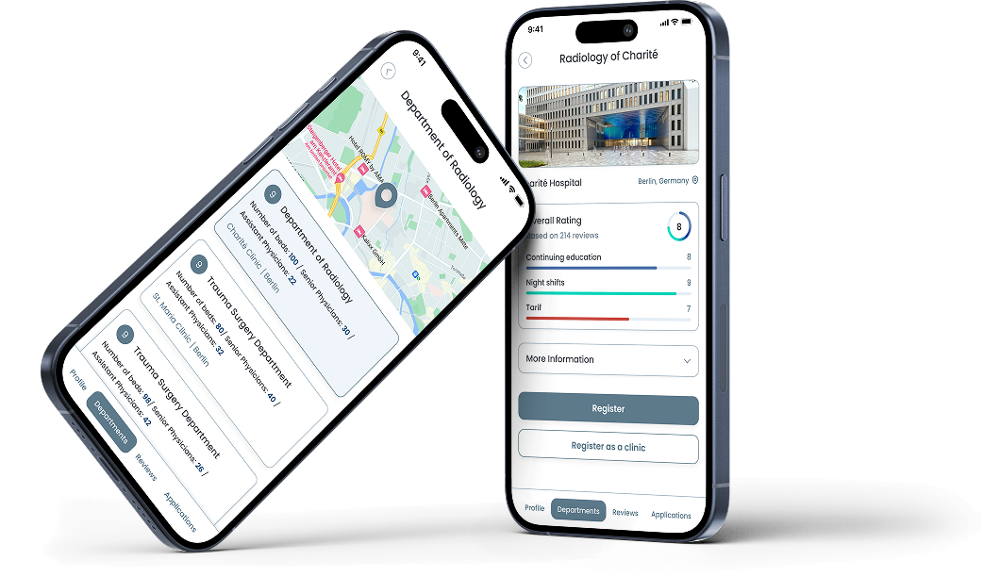

Digital bank for Russian-speaking expats in the UAE that will solve the problems of trust, language and regulatory barriers. “INVEST Bank: How we combined two cultures in one interface.”
Task
Objective: To develop a digital banking platform that feels «at home» for CIS users, while ensuring full compliance with UAE laws and regulations. The aim was to deliver a seamless, culturally familiar banking experience for Russian expatriates in the UAE, addressing key barriers such as language, citizenship challenges, and trust in local financial systems. Additionally, the project sought to enable Russian expatriates to receive their salaries directly into their accounts at Invest Bank and provide a user interface based on familiar Russian banking concepts.
The Main Goal
To develop a digital bank that feels “at home” for CIS users, while ensuring full compliance with UAE laws. The project focused on addressing 3 main pain points: language, citizenship, and trust.
UX Methodology & Process Select a file to preview in Google Drive
To develop a digital bank that feels “at home” for CIS users, while ensuring full compliance with UAE laws. The project focused on addressing 3 main pain points: language, citizenship, and trust.
1. BRD & User Research
A thorough brief was produced, and comprehensive research was conducted to understand the needs, pain points, and behaviors of Russian expatriates in the UAE. These insights informed all subsequent design decisions.
2. Customer Journey Mapping (CJM)
The entire journey from app discovery to using key features like account management and transaction history was mapped. This allowed us to visualize pain points at each step, enabling us to optimize the user experience.
Target audience
A significant portion of Invest Bank’s target audience consists of IT professionals, engineers, developers, and tech entrepreneurs living in the UAE. This group is digitally fluent, aware of tech innovations, and demands efficient, secure, and seamless banking solutions that match their fast-paced, tech-driven lifestyles.
Demographics:
- Age: Typically aged 25–45.
- Occupation: IT professionals, software developers, digital entrepreneurs, and tech startup founders.
- Location: Primarily based in cities like Dubai and Abu Dhabi, where the tech industry thrives and offers opportunities for business and professional growth.
- Needs: Digital-First Solutions — these users expect a banking experience that integrates seamlessly into their digital life, prioritizing online and mobile banking with self-service and automated features.
Persona analysis
| Group | IT specialists | Businessmen | Marketers, bloggers |
|---|---|---|---|
| Name | Nikolay, Developer | Sergey, Entrepreneur | Natasha, Marketer |
| Age | 25 | 40 | 30–45 |
| Solvency | Average | Tall | Average |
| Motivation | Frequent financial transactions, investing, international transfers, paying bills | Payroll, business expenses management, investments | Payment for services, earnings on social platforms, expense management |
| Expectations | Security, high speed of transactions, access to investment opportunities, international transfers | Convenient online banking, business expense management, saving money | Ease of use, clear interface, possibility of integration with social platforms |
Users expressed a strong need for monthly spending analytics to track their expenses and understand their financial habits. They wanted a clear breakdown of where their money was going — on daily purchases, subscriptions, transfers, or savings — to manage their finances more effectively.
- 85% expressed frustration over the inability to open local accounts without UAE residency.
- 70% preferred banking apps that allowed full access to services without needing to visit physical branches.
3. Competitive Analysis Select a file to preview in Google Drive
- Tinkoff Bank – Known for its fully digital banking experience, intuitive mobile app, and strong financial analytics.
- SberBank – A trusted banking giant with a vast ecosystem, but a more traditional interface.
- Alfa-Bank – Offers advanced financial tools and a business-friendly platform with international banking options.
🔍 Key Takeaways & Improvements for Invest Bank:
- Seamless UX: Forged an intuitive navigation system, inspired by Tinkoff’s mobile-first approach.
- Advanced Analytics: Showcased detailed spending insights, addressing gaps in competitor offerings.
- Familiar UI: Developed an interface that feels natural to CIS users while complying with UAE regulations.
- Fast Onboarding: Secured quick, fully online account opening, solving residency-related challenges.
Transfer analytics:
4. Needs & User Insights
One example of In-depth interview
- Digital-First Solutions: Users expect a banking experience that integrates seamlessly into their digital life. They prioritize online and mobile banking, preferring platforms that offer self-service and automated features.
- Efficiency & Speed: Users demand solutions that enable quick transactions, simple account management, and instant access to financial data and transaction histories.
- Enhanced Security: With heightened awareness of cyber threats, users seek platforms that offer strong authentication methods, data encryption, and assurance that their information is protected.
- International Flexibility: As tech professionals often deal with clients and businesses from various countries, they need banking solutions that support international money transfers, multi-currency accounts, and low-fee transactions.
Key challenges
-
Outdated Banking Experience
Traditional banking apps lacked the smooth, intuitive experience that digital professionals expect.
-
Limited Global Access
Many banks required in-person visits to open accounts, making international transactions slow and inconvenient.
-
Barriers for Russian Expats
Without UAE citizenship or a residence visa, many struggled to open accounts, get cards, receive salaries, and make payments, forcing them to use expensive workarounds.
Payment transaction:
How I Solved These UI & UX Problems
By deeply understanding user pain points and employing a data-driven design approach, I transformed Invest Bank into a seamless, efficient, and secure digital banking platform tailored for IT professionals and entrepreneurs in the UAE.
I addressed the most complex sections of the platform, including the account list, account details page, card management page, transaction history, and overall product styling. By refining these key areas, I ensured an intuitive, modern, and visually cohesive experience that aligned with user expectations and met regulatory requirements.
Mind map for MVP:
Eliminating UX Challenges with Smart Solutions
-
Optimized User Flows:
I mapped the entire customer journey, identified friction points, and streamlined the registration, transaction, and account management processes for maximum efficiency. Key areas like the account list and account details pages were simplified, making navigation intuitive and effortless for users to manage their finances.
-
Effortless Account Opening:
I redefined the onboarding process, enabling users to open accounts within minutes through a fully online identification system, eliminating the need for paperwork and in-person visits. This was crucial in overcoming residency challenges, ensuring a smooth start for users in the UAE.
-
Seamless Global Banking:
I integrated multi-currency accounts and international transfer features, enabling users to manage both local and global finances with ease. Features like low-fee international transfers and real-time transaction tracking were embedded into the card management page and transaction history for an uninterrupted user experience.
-
Real-Time Financial Insights:
I introduced monthly analytics to provide users with clear insights into their financial habits. This feature includes an engaging spending breakdown by category, allowing users to track where their money goes, whether for daily purchases, subscriptions, or transfers.
Dark & Light Modes
Recognizing the importance of user preferences, I introduced both dark and light themes, giving users the flexibility to select a visual style that best suits their needs.
Scalable Design System
I developed a robust, reusable design system, ensuring brand consistency, efficiency, and adaptability as the product continues to evolve and scale.

By addressing these UI and UX challenges, I transformed Invest Bank into a modern, secure, and user-centric digital banking platform, designed to meet the needs of tech-savvy professionals in the UAE.
This project was a fintech startup, and I thoroughly enjoyed contributing to Invest Bank, an innovative online banking solution.
As a Product UI/UX Designer, I am dedicated to delivering effective and high-quality design solutions. This project exemplified my commitment to creating user-centered experiences. I am always open to new professional opportunities and collaborations.
MedixBridge: Medical Startup in Germany
